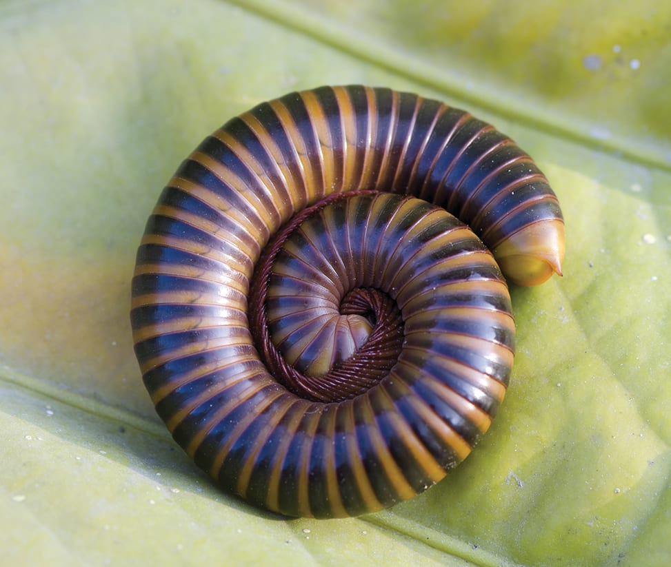

basil made this website so don't say I did not Remi and Nessa ,ok?got it?and this is manley to you Remi Walker. for ant buisness
The millipede’s name means "thousand-legger", which is what they appear to be. Millipedes actually have only 200 to 300 legs and at least four eyes. They are gentle and easy to handle, sleep during the day and come out in the evening to eat.
Scientific Name: narceus americanus
Average Adult Size: 4 to 11 inches long
Average Life Span 3+ years with proper care
In many parts of the world, crickets are considered a delicacy. They’re prepared in many different ways! In Thailand, fried crickets are commonly served with beer; one of the most popular snacks in the country is Jing Leed, a deep-fried cricket seasoned with sauce and pepper.
Almost all types of crickets weigh between .2 and .8 grams—or .0007 to .003 ounces. To put these numbers in perspective, a paper clip weighs one gram!
In China, crickets are a traditional symbol of good luck. In the imperial era, crickets were a popular pet for nobles and commoners alike. They were often kept in bamboo or even golden cages.
Like many other insects, crickets don’t have lungs and can’t breathe through their mouths or nostrils. Instead, they take air in through a series of small holes on the sides of their bodies called spiracles.